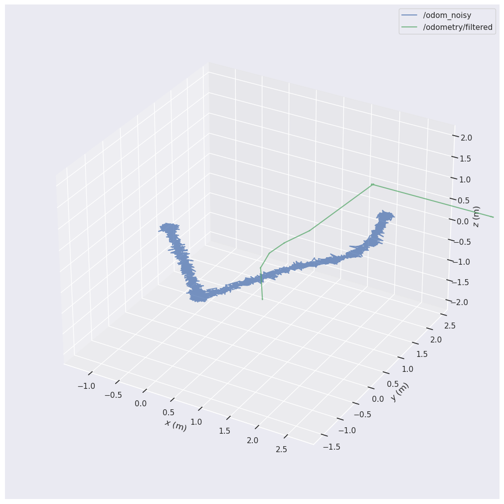

The Problem
Skid-steer robots rely on sliding to turn, which makes their raw wheel encoders highly inaccurate during rotations. A single slip can cause the entire SLAM map to permanently distort.
Core Platform Project
An industrial-grade, fault-tolerant Autonomous Mobile Robot backbone featuring Extended Kalman Filter sensor fusion, SLAM Toolbox, and headless Kubernetes deployment.
Project Showcase
This page presents the FusionBot-Core platform. Built from the ground up, this project serves as a foundational "Backbone Bot" for future robotics research. It tackles the hardest challenges in modern robotics: time synchronization, skid-steer odometry drift, and cloud-native simulation.
By engineering a modular pipeline that perfectly fuses Wheel Odometry, IMU data, and Visual Odometry, the robot maintains fault-tolerant localization even when sensors fail or wheels slip on industrial floors.
The core philosophy behind FusionBot-Core is to create a robot that is virtually indestructible from a software perspective. Industrial environments are chaotic: wheels slip on oil, LiDARs get blinded by dust, and cameras lose tracking in poor lighting. By fusing multiple disparate sensors through an Extended Kalman Filter, the robot calculates an optimal state estimate that rejects individual sensor failures.
Skid-steer robots rely on sliding to turn, which makes their raw wheel encoders highly inaccurate during rotations. A single slip can cause the entire SLAM map to permanently distort.
We decouple the rotation from the wheels and heavily trust a 6-DOF IMU. By tuning the EKF covariance matrices, the system automatically ignores spurious wheel data when the robot spins.
With a perfectly stable TF tree and verified odometry, developers can confidently build Nav2 path-planning or YOLO computer vision modules on top of this platform without debugging core localization.
The system runs entirely within the ROS 2 framework, bridging data from the Gazebo Harmonic physics engine via custom C++ nodes to ensure perfect timestamp synchronization (`use_sim_time: True`).
Running as an asynchronous lifecycle node, it processes the fused `odometry/filtered` data and 2D LiDAR scans to map complex geometric environments.
An RGB-D camera generates 3D visual odometry, providing a completely independent motion estimate to double-check the mechanical wheels.
To mathematically prove the fault-tolerance of our sensor fusion architecture, we injected massive Gaussian noise into the wheel encoders (simulating severe wheel slip and mechanical failure). We then recorded the raw noisy odometry versus our EKF filtered odometry using `ros2 bag`.
Using the Python `evo` benchmarking suite, we compared the trajectories. Despite the raw wheel data hallucinating over 353 meters of travel, the EKF filter mathematically corrected the path back to the true 9.2 meters of actual movement.

FusionBot-Core is designed to run in the cloud. Developing ROS 2 applications locally requires massive installations and specific Linux distributions. By fully containerizing the stack in `Dockerfile.prod` and writing Kubernetes configuration files, the entire robot can be spawned in a headless cloud server (like Amazon EKS or local Minikube).
To solve the issue of GUI-dependent physics engines crashing in the cloud, Gazebo Harmonic is configured to run in pure headless Server Mode (`-s`), and Foxglove Studio connects remotely via WebSockets to visualize the simulation in real-time from any web browser.